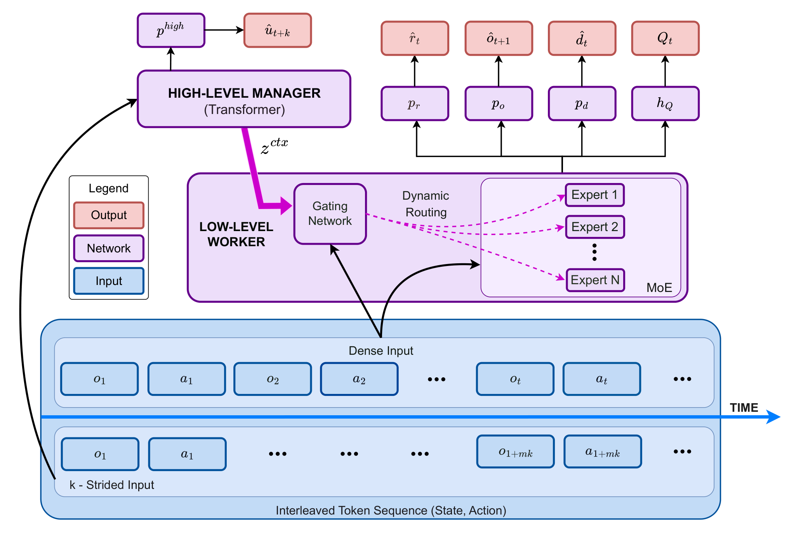
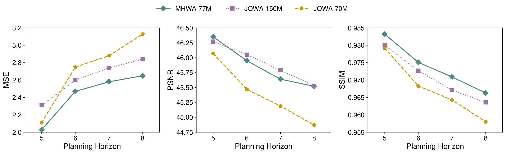

Learn coarse context
A strided Manager learns predictive representations using a skip-step observation objective.
MULTI-GAME OFFLINE REINFORCEMENT LEARNING
Learn the world.
Act with structure.
A strided high-level context channel meets a locally reactive mixture of experts. One world-action model, fourteen Atari games, and less training computation.
RLiable seed-by-game aggregation
Three training seeds · 14 games
Numerically comparable to the
published JOWA-150M result
Forward + backward per sequence
Compared with JOWA-150M
THE QUESTION
Small prediction errors become bigger decisions.
Autoregressive world models can drift as they roll out their own predictions. Scaling model capacity helps, but increases training cost. MHWA explores a complementary direction: organize context and computation across timescales.
The high-level pathway learns from strided trajectories with a skip-step predictive objective. The low-level pathway combines this context with the instantaneous token state to select specialized experts across heterogeneous game dynamics.
Explore the full formulation02 / ARCHITECTURE
A high-level context channel guides sparse computation at the token level.

A strided Manager learns predictive representations using a skip-step observation objective.
Stop-gradient isolates the Manager from low-level losses, while the projector, router, and Worker remain trainable.
The gate combines context and current token state, activating two of four experts in each Worker MoE layer.
03 / PAPER RESULTS
14 Atari games · 10% subsampled offline data
Matched MHWA / JOWA-70M comparison across three seeds.
Whiskers: 95% stratified-bootstrap confidence intervals. * Published reference; separate from the matched three-seed comparison.
FORWARD + BACKWARD / SEQUENCE
Identical input shapes: 8 frames / 296 tokens per sequence. These figures measure training computation, not inference speed.
| Model | IQM HNS | 95% confidence interval | GFLOPs / sequence |
|---|---|---|---|
| JOWA-70M | 0.529 | [0.459, 0.602] | 84.238 |
| MHWA-77M | 0.884 | [0.736, 1.031] | 48.199 |
| JOWA-150M · published reference | 0.833 | — | 165.524 |
IQM uses RLiable’s seed-by-game aggregation. The paper also reports a mean of seed-level IQMs of 0.867 ± 0.047; these are different aggregation procedures.
On five held-out Atari games, MHWA reaches 0.643 ± 0.007 IQM DNS under the JOWA fine-tuning protocol, compared with the published JOWA-150M result of 0.647.
04 / WORLD-MODEL QUALITY
Open-loop reconstruction measures how predictions evolve after conditioning on four real frames.

CITE THIS WORK
The paper is available now. The public code release is in preparation.
Get in touch ↗@misc{pan2026mhwa,
title = {MHWA: Multi-timescale Hierarchical World-Action Model},
author = {Pan, Pengcheng and Ma, Guoqing and Zhang, Yuhan
and Chen, Yang and Liu, Yichen and Li, Ziheng and Yu, Shan},
year = {2026},
eprint = {2610.14727},
archivePrefix = {arXiv}
}